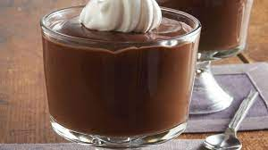

Chocolate pudding

Description
It is a steamed dessert which consists of flour, baking powder, sugar, whole eggs, vanilla aroma, and cocoa
powder or chocolate mixed together to make a batter and steamed or baked similar to Christmas pudding.
Ingredients
- 3 tbsps cornstarch
- 2 tbsps water
- 1 ½ cups of soy milk
- ¼ vanilla extract
- ¼ cup white sugar
- ¼ cup unsweetened cocoa powder
Steps
- In small bowl, combine cornstarch and water to form a paste.
- In large saucepan over medium heat, stir together soy milk, vanilla, sugar, cocoa and cornstarch mixture.
Cook, stirring constantly, until mixture boils. Continue to cook and stir until mixture thickens. Remove
from heat. Pudding will continue to thicken as it cools. Allow to cool five minutes, then chill in
refrigerator until completely cool.